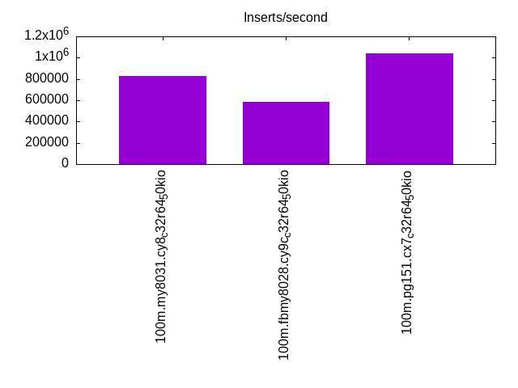
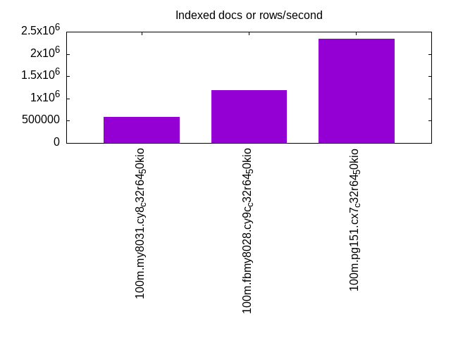
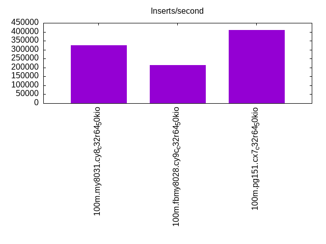
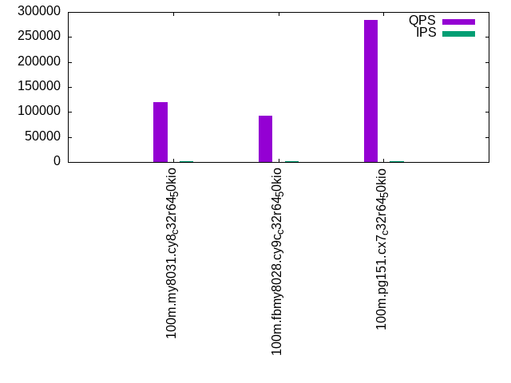
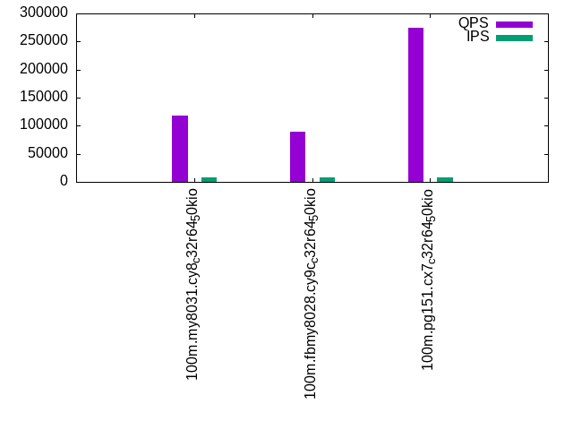
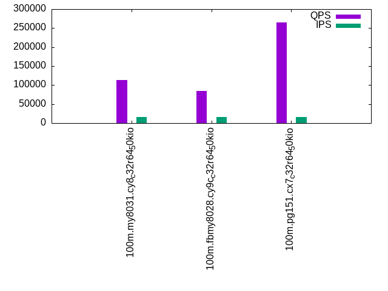

This is a report for the insert benchmark with 100M docs and 16 client(s). It is generated by scripts (bash, awk, sed) and Tufte might not be impressed. An overview of the insert benchmark is here and a short update is here. Below, by DBMS, I mean DBMS+version.config. An example is my8020.c10b40 where my means MySQL, 8020 is version 8.0.20 and c10b40 is the name for the configuration file.
The test server is an c6i.8xl with 16 cores, 16 HW threads (hyperthread disabled), 64G RAM and io2 storage (2T, 50K IOPs). The benchmark was run with 16 clients and there was 1 or 2 connections per client (1 for queries, 1 for inserts). The benchmark loads 75M rows without secondary indexes, creates secondary indexes, loads another 25M rows then does 3 read+write tests for one hour each that do queries as fast as possible with 100, 500 and then 1000 writes/second/client concurrent with the queries. The database is cached by the storage engine and the only IO is for writes. Clients and the DBMS share one server. The per-database configs are in the per-database subdirectories here.
The tested DBMS are:
The numbers are inserts/s for l.i0 and l.i1, indexed docs (or rows) /s for l.x and queries/s for q*.2. The values are the average rate over the entire test for inserts (IPS) and queries (QPS). The range of values for IPS and QPS is split into 3 parts: bottom 25%, middle 50%, top 25%. Values in the bottom 25% have a red background, values in the top 25% have a green background and values in the middle have no color. A gray background is used for values that can be ignored because the DBMS did not sustain the target insert rate. Red backgrounds are not used when the minimum value is within 80% of the max value.
| dbms | l.i0 | l.x | l.i1 | q100.1 | q500.1 | q1000.1 |
|---|---|---|---|---|---|---|
| 100m.my8031.cy8_c32r64_50kio | 824176 | 577692 | 324675 | 119519 | 117577 | 113873 |
| 100m.fbmy8028.cy9c_c32r64_50kio | 581395 | 1192063 | 213675 | 92779 | 89606 | 85140 |
| 100m.pg151.cx7_c32r64_50kio | 1041667 | 2346875 | 409836 | 284261 | 274475 | 264614 |
This lists the average rate of inserts/s for the tests that do inserts concurrent with queries. For such tests the query rate is listed in the table above. The read+write tests are setup so that the insert rate should match the target rate every second. Cells that are not at least 95% of the target have a red background to indicate a failure to satisfy the target.
| dbms | q100.1 | q500.1 | q1000.1 |
|---|---|---|---|
| my8031.cy8_c32r64_50kio | 1592 | 7958 | 15916 |
| fbmy8028.cy9c_c32r64_50kio | 1592 | 7956 | 15916 |
| pg151.cx7_c32r64_50kio | 1592 | 7958 | 15916 |
| target | 1600 | 8000 | 16000 |
l.i0: load without secondary indexes. Graphs for performance per 1-second interval are here.
Average throughput:
Insert response time histogram: each cell has the percentage of responses that take <= the time in the header and max is the max response time in seconds. For the max column values in the top 25% of the range have a red background and in the bottom 25% of the range have a green background. The red background is not used when the min value is within 80% of the max value.
| dbms | 256us | 1ms | 4ms | 16ms | 64ms | 256ms | 1s | 4s | 16s | gt | max |
|---|---|---|---|---|---|---|---|---|---|---|---|
| my8031.cy8_c32r64_50kio | 26.575 | 72.961 | 0.411 | 0.036 | 0.017 | 0.113 | |||||
| fbmy8028.cy9c_c32r64_50kio | 7.278 | 88.931 | 3.729 | 0.060 | 0.002 | 0.120 | |||||
| pg151.cx7_c32r64_50kio | 35.926 | 63.814 | 0.176 | 0.084 | 0.039 |
Performance metrics for the DBMS listed above. Some are normalized by throughput, others are not. Legend for results is here.
ips qps rps rmbps wps wmbps rpq rkbpq wpi wkbpi csps cpups cspq cpupq dbgb1 dbgb2 rss maxop p50 p99 tag 824176 0 0 0.0 1229.5 213.4 0.000 0.000 0.001 0.265 176068 71.9 0.214 14 5.1 101.6 9.4 0.113 62433 15182 100m.my8031.cy8_c32r64_50kio 581395 0 0 0.0 911.4 207.0 0.000 0.000 0.002 0.365 77965 69.2 0.134 19 3.0 3.6 1.4 0.120 40987 21171 100m.fbmy8028.cy9c_c32r64_50kio 1041667 0 0 0.0 1839.1 425.2 0.000 0.000 0.002 0.418 75919 72.5 0.073 11 7.2 19.4 7.3 0.039 113380 28968 100m.pg151.cx7_c32r64_50kio
l.x: create secondary indexes.
Average throughput:
Performance metrics for the DBMS listed above. Some are normalized by throughput, others are not. Legend for results is here.
ips qps rps rmbps wps wmbps rpq rkbpq wpi wkbpi csps cpups cspq cpupq dbgb1 dbgb2 rss maxop p50 p99 tag 577692 0 3200 204.5 11169.6 523.3 0.006 0.363 0.019 0.928 90865 38.2 0.157 11 11.1 107.7 13.1 0.005 NA NA 100m.my8031.cy8_c32r64_50kio 1192063 0 3 0.2 1003.4 226.1 0.000 0.000 0.001 0.194 3786 76.4 0.003 10 5.1 5.8 8.0 0.017 NA NA 100m.fbmy8028.cy9c_c32r64_50kio 2346875 0 0 0.0 2702.5 655.7 0.000 0.000 0.001 0.286 27328 35.6 0.012 2 13.8 32.1 0.0 0.127 NA NA 100m.pg151.cx7_c32r64_50kio
l.i1: continue load after secondary indexes created. Graphs for performance per 1-second interval are here.
Average throughput:
Insert response time histogram: each cell has the percentage of responses that take <= the time in the header and max is the max response time in seconds. For the max column values in the top 25% of the range have a red background and in the bottom 25% of the range have a green background. The red background is not used when the min value is within 80% of the max value.
| dbms | 256us | 1ms | 4ms | 16ms | 64ms | 256ms | 1s | 4s | 16s | gt | max |
|---|---|---|---|---|---|---|---|---|---|---|---|
| my8031.cy8_c32r64_50kio | nonzero | 98.285 | 1.285 | 0.344 | 0.073 | 0.013 | 0.542 | ||||
| fbmy8028.cy9c_c32r64_50kio | 2.436 | 78.563 | 18.954 | 0.048 | 0.058 | ||||||
| pg151.cx7_c32r64_50kio | 24.201 | 74.859 | 0.602 | 0.338 | 0.055 |
Performance metrics for the DBMS listed above. Some are normalized by throughput, others are not. Legend for results is here.
ips qps rps rmbps wps wmbps rpq rkbpq wpi wkbpi csps cpups cspq cpupq dbgb1 dbgb2 rss maxop p50 p99 tag 324675 0 4549 71.1 2214.3 293.1 0.014 0.224 0.007 0.924 123077 69.2 0.379 34 19.0 115.5 21.6 0.542 25323 600 100m.my8031.cy8_c32r64_50kio 213675 0 168 20.8 1027.5 235.2 0.001 0.099 0.005 1.127 58670 53.1 0.275 40 11.3 13.2 8.7 0.058 14139 1848 100m.fbmy8028.cy9c_c32r64_50kio 409836 0 0 0.0 2389.0 552.4 0.000 0.000 0.006 1.380 79203 70.0 0.193 27 22.8 53.1 0.0 0.055 33861 9638 100m.pg151.cx7_c32r64_50kio
q100.1: range queries with 100 insert/s per client. Graphs for performance per 1-second interval are here.
Average throughput:
Query response time histogram: each cell has the percentage of responses that take <= the time in the header and max is the max response time in seconds. For max values in the top 25% of the range have a red background and in the bottom 25% of the range have a green background. The red background is not used when the min value is within 80% of the max value.
| dbms | 256us | 1ms | 4ms | 16ms | 64ms | 256ms | 1s | 4s | 16s | gt | max |
|---|---|---|---|---|---|---|---|---|---|---|---|
| my8031.cy8_c32r64_50kio | 99.951 | 0.032 | 0.017 | 0.001 | nonzero | 0.032 | |||||
| fbmy8028.cy9c_c32r64_50kio | 99.563 | 0.411 | 0.023 | 0.003 | nonzero | 0.028 | |||||
| pg151.cx7_c32r64_50kio | 99.970 | 0.024 | 0.006 | 0.001 | nonzero | 0.026 |
Insert response time histogram: each cell has the percentage of responses that take <= the time in the header and max is the max response time in seconds. For max values in the top 25% of the range have a red background and in the bottom 25% of the range have a green background. The red background is not used when the min value is within 80% of the max value.
| dbms | 256us | 1ms | 4ms | 16ms | 64ms | 256ms | 1s | 4s | 16s | gt | max |
|---|---|---|---|---|---|---|---|---|---|---|---|
| my8031.cy8_c32r64_50kio | 99.715 | 0.284 | 0.001 | 0.016 | |||||||
| fbmy8028.cy9c_c32r64_50kio | 26.871 | 72.799 | 0.330 | 0.016 | |||||||
| pg151.cx7_c32r64_50kio | 99.882 | 0.116 | 0.002 | 0.021 |
Performance metrics for the DBMS listed above. Some are normalized by throughput, others are not. Legend for results is here.
ips qps rps rmbps wps wmbps rpq rkbpq wpi wkbpi csps cpups cspq cpupq dbgb1 dbgb2 rss maxop p50 p99 tag 1592 119519 0 0.0 287.2 8.4 0.000 0.000 0.180 5.379 230485 95.1 1.928 127 19.4 115.9 22.0 0.032 7528 7224 100m.my8031.cy8_c32r64_50kio 1592 92779 13 0.1 20.9 4.4 0.000 0.001 0.013 2.835 178466 95.0 1.924 164 7.5 8.1 22.2 0.028 5836 4939 100m.fbmy8028.cy9c_c32r64_50kio 1592 284261 0 0.0 1327.4 41.8 0.000 0.000 0.834 26.874 544540 95.1 1.916 54 23.4 52.0 0.0 0.026 17996 17294 100m.pg151.cx7_c32r64_50kio
q500.1: range queries with 500 insert/s per client. Graphs for performance per 1-second interval are here.
Average throughput:
Query response time histogram: each cell has the percentage of responses that take <= the time in the header and max is the max response time in seconds. For max values in the top 25% of the range have a red background and in the bottom 25% of the range have a green background. The red background is not used when the min value is within 80% of the max value.
| dbms | 256us | 1ms | 4ms | 16ms | 64ms | 256ms | 1s | 4s | 16s | gt | max |
|---|---|---|---|---|---|---|---|---|---|---|---|
| my8031.cy8_c32r64_50kio | 99.752 | 0.176 | 0.059 | 0.013 | nonzero | nonzero | 0.127 | ||||
| fbmy8028.cy9c_c32r64_50kio | 98.520 | 1.403 | 0.058 | 0.018 | 0.001 | nonzero | 0.076 | ||||
| pg151.cx7_c32r64_50kio | 99.969 | 0.017 | 0.008 | 0.006 | 0.001 | nonzero | 0.070 |
Insert response time histogram: each cell has the percentage of responses that take <= the time in the header and max is the max response time in seconds. For max values in the top 25% of the range have a red background and in the bottom 25% of the range have a green background. The red background is not used when the min value is within 80% of the max value.
| dbms | 256us | 1ms | 4ms | 16ms | 64ms | 256ms | 1s | 4s | 16s | gt | max |
|---|---|---|---|---|---|---|---|---|---|---|---|
| my8031.cy8_c32r64_50kio | 82.094 | 17.601 | 0.305 | nonzero | 0.065 | ||||||
| fbmy8028.cy9c_c32r64_50kio | 22.780 | 68.631 | 8.180 | 0.410 | 0.055 | ||||||
| pg151.cx7_c32r64_50kio | 6.703 | 85.989 | 5.303 | 1.957 | 0.047 | 0.150 |
Performance metrics for the DBMS listed above. Some are normalized by throughput, others are not. Legend for results is here.
ips qps rps rmbps wps wmbps rpq rkbpq wpi wkbpi csps cpups cspq cpupq dbgb1 dbgb2 rss maxop p50 p99 tag 7958 117577 0 0.0 262.8 10.1 0.000 0.000 0.033 1.297 227810 95.1 1.938 129 21.4 118.0 24.0 0.127 7419 6891 100m.my8031.cy8_c32r64_50kio 7956 89606 0 0.0 67.2 15.3 0.000 0.000 0.008 1.970 173437 94.6 1.936 169 9.5 9.8 41.7 0.076 5660 3869 100m.fbmy8028.cy9c_c32r64_50kio 7958 274475 0 0.0 1049.1 75.6 0.000 0.000 0.132 9.733 526465 95.0 1.918 55 26.3 49.7 0.0 0.070 17197 15892 100m.pg151.cx7_c32r64_50kio
q1000.1: range queries with 1000 insert/s per client. Graphs for performance per 1-second interval are here.
Average throughput:
Query response time histogram: each cell has the percentage of responses that take <= the time in the header and max is the max response time in seconds. For max values in the top 25% of the range have a red background and in the bottom 25% of the range have a green background. The red background is not used when the min value is within 80% of the max value.
| dbms | 256us | 1ms | 4ms | 16ms | 64ms | 256ms | 1s | 4s | 16s | gt | max |
|---|---|---|---|---|---|---|---|---|---|---|---|
| my8031.cy8_c32r64_50kio | 99.116 | 0.730 | 0.136 | 0.018 | 0.001 | 0.043 | |||||
| fbmy8028.cy9c_c32r64_50kio | 96.595 | 3.214 | 0.166 | 0.023 | 0.002 | 0.061 | |||||
| pg151.cx7_c32r64_50kio | 99.903 | 0.034 | 0.053 | 0.006 | 0.004 | nonzero | 0.089 |
Insert response time histogram: each cell has the percentage of responses that take <= the time in the header and max is the max response time in seconds. For max values in the top 25% of the range have a red background and in the bottom 25% of the range have a green background. The red background is not used when the min value is within 80% of the max value.
| dbms | 256us | 1ms | 4ms | 16ms | 64ms | 256ms | 1s | 4s | 16s | gt | max |
|---|---|---|---|---|---|---|---|---|---|---|---|
| my8031.cy8_c32r64_50kio | 71.833 | 27.773 | 0.394 | 0.063 | |||||||
| fbmy8028.cy9c_c32r64_50kio | 9.483 | 73.386 | 16.659 | 0.473 | 0.059 | ||||||
| pg151.cx7_c32r64_50kio | 0.107 | 83.934 | 13.375 | 2.473 | 0.111 | 0.205 |
Performance metrics for the DBMS listed above. Some are normalized by throughput, others are not. Legend for results is here.
ips qps rps rmbps wps wmbps rpq rkbpq wpi wkbpi csps cpups cspq cpupq dbgb1 dbgb2 rss maxop p50 p99 tag 15916 113873 0 0.0 807.9 32.7 0.000 0.000 0.051 2.101 223838 95.1 1.966 134 37.6 134.1 38.5 0.043 7115 6315 100m.my8031.cy8_c32r64_50kio 15916 85140 0 0.0 138.5 31.4 0.000 0.000 0.009 2.021 166566 94.5 1.956 178 13.5 15.2 41.9 0.061 5450 3197 100m.fbmy8028.cy9c_c32r64_50kio 15916 264614 0 0.0 1207.0 117.8 0.000 0.000 0.076 7.579 509368 94.7 1.925 57 44.4 77.8 0.0 0.089 16526 13825 100m.pg151.cx7_c32r64_50kio
l.i0: load without secondary indexes
Performance metrics for all DBMS, not just the ones listed above. Some are normalized by throughput, others are not. Legend for results is here.
ips qps rps rmbps wps wmbps rpq rkbpq wpi wkbpi csps cpups cspq cpupq dbgb1 dbgb2 rss maxop p50 p99 tag 824176 0 0 0.0 1229.5 213.4 0.000 0.000 0.001 0.265 176068 71.9 0.214 14 5.1 101.6 9.4 0.113 62433 15182 100m.my8031.cy8_c32r64_50kio 581395 0 0 0.0 911.4 207.0 0.000 0.000 0.002 0.365 77965 69.2 0.134 19 3.0 3.6 1.4 0.120 40987 21171 100m.fbmy8028.cy9c_c32r64_50kio 1041667 0 0 0.0 1839.1 425.2 0.000 0.000 0.002 0.418 75919 72.5 0.073 11 7.2 19.4 7.3 0.039 113380 28968 100m.pg151.cx7_c32r64_50kio
l.x: create secondary indexes
Performance metrics for all DBMS, not just the ones listed above. Some are normalized by throughput, others are not. Legend for results is here.
ips qps rps rmbps wps wmbps rpq rkbpq wpi wkbpi csps cpups cspq cpupq dbgb1 dbgb2 rss maxop p50 p99 tag 577692 0 3200 204.5 11169.6 523.3 0.006 0.363 0.019 0.928 90865 38.2 0.157 11 11.1 107.7 13.1 0.005 NA NA 100m.my8031.cy8_c32r64_50kio 1192063 0 3 0.2 1003.4 226.1 0.000 0.000 0.001 0.194 3786 76.4 0.003 10 5.1 5.8 8.0 0.017 NA NA 100m.fbmy8028.cy9c_c32r64_50kio 2346875 0 0 0.0 2702.5 655.7 0.000 0.000 0.001 0.286 27328 35.6 0.012 2 13.8 32.1 0.0 0.127 NA NA 100m.pg151.cx7_c32r64_50kio
l.i1: continue load after secondary indexes created
Performance metrics for all DBMS, not just the ones listed above. Some are normalized by throughput, others are not. Legend for results is here.
ips qps rps rmbps wps wmbps rpq rkbpq wpi wkbpi csps cpups cspq cpupq dbgb1 dbgb2 rss maxop p50 p99 tag 324675 0 4549 71.1 2214.3 293.1 0.014 0.224 0.007 0.924 123077 69.2 0.379 34 19.0 115.5 21.6 0.542 25323 600 100m.my8031.cy8_c32r64_50kio 213675 0 168 20.8 1027.5 235.2 0.001 0.099 0.005 1.127 58670 53.1 0.275 40 11.3 13.2 8.7 0.058 14139 1848 100m.fbmy8028.cy9c_c32r64_50kio 409836 0 0 0.0 2389.0 552.4 0.000 0.000 0.006 1.380 79203 70.0 0.193 27 22.8 53.1 0.0 0.055 33861 9638 100m.pg151.cx7_c32r64_50kio
q100.1: range queries with 100 insert/s per client
Performance metrics for all DBMS, not just the ones listed above. Some are normalized by throughput, others are not. Legend for results is here.
ips qps rps rmbps wps wmbps rpq rkbpq wpi wkbpi csps cpups cspq cpupq dbgb1 dbgb2 rss maxop p50 p99 tag 1592 119519 0 0.0 287.2 8.4 0.000 0.000 0.180 5.379 230485 95.1 1.928 127 19.4 115.9 22.0 0.032 7528 7224 100m.my8031.cy8_c32r64_50kio 1592 92779 13 0.1 20.9 4.4 0.000 0.001 0.013 2.835 178466 95.0 1.924 164 7.5 8.1 22.2 0.028 5836 4939 100m.fbmy8028.cy9c_c32r64_50kio 1592 284261 0 0.0 1327.4 41.8 0.000 0.000 0.834 26.874 544540 95.1 1.916 54 23.4 52.0 0.0 0.026 17996 17294 100m.pg151.cx7_c32r64_50kio
q500.1: range queries with 500 insert/s per client
Performance metrics for all DBMS, not just the ones listed above. Some are normalized by throughput, others are not. Legend for results is here.
ips qps rps rmbps wps wmbps rpq rkbpq wpi wkbpi csps cpups cspq cpupq dbgb1 dbgb2 rss maxop p50 p99 tag 7958 117577 0 0.0 262.8 10.1 0.000 0.000 0.033 1.297 227810 95.1 1.938 129 21.4 118.0 24.0 0.127 7419 6891 100m.my8031.cy8_c32r64_50kio 7956 89606 0 0.0 67.2 15.3 0.000 0.000 0.008 1.970 173437 94.6 1.936 169 9.5 9.8 41.7 0.076 5660 3869 100m.fbmy8028.cy9c_c32r64_50kio 7958 274475 0 0.0 1049.1 75.6 0.000 0.000 0.132 9.733 526465 95.0 1.918 55 26.3 49.7 0.0 0.070 17197 15892 100m.pg151.cx7_c32r64_50kio
q1000.1: range queries with 1000 insert/s per client
Performance metrics for all DBMS, not just the ones listed above. Some are normalized by throughput, others are not. Legend for results is here.
ips qps rps rmbps wps wmbps rpq rkbpq wpi wkbpi csps cpups cspq cpupq dbgb1 dbgb2 rss maxop p50 p99 tag 15916 113873 0 0.0 807.9 32.7 0.000 0.000 0.051 2.101 223838 95.1 1.966 134 37.6 134.1 38.5 0.043 7115 6315 100m.my8031.cy8_c32r64_50kio 15916 85140 0 0.0 138.5 31.4 0.000 0.000 0.009 2.021 166566 94.5 1.956 178 13.5 15.2 41.9 0.061 5450 3197 100m.fbmy8028.cy9c_c32r64_50kio 15916 264614 0 0.0 1207.0 117.8 0.000 0.000 0.076 7.579 509368 94.7 1.925 57 44.4 77.8 0.0 0.089 16526 13825 100m.pg151.cx7_c32r64_50kio
Insert response time histogram
256us 1ms 4ms 16ms 64ms 256ms 1s 4s 16s gt max tag 0.000 26.575 72.961 0.411 0.036 0.017 0.000 0.000 0.000 0.000 0.113 my8031.cy8_c32r64_50kio 0.000 7.278 88.931 3.729 0.060 0.002 0.000 0.000 0.000 0.000 0.120 fbmy8028.cy9c_c32r64_50kio 0.000 35.926 63.814 0.176 0.084 0.000 0.000 0.000 0.000 0.000 0.039 pg151.cx7_c32r64_50kio
TODO - determine whether there is data for create index response time
Insert response time histogram
256us 1ms 4ms 16ms 64ms 256ms 1s 4s 16s gt max tag 0.000 nonzero 98.285 1.285 0.344 0.073 0.013 0.000 0.000 0.000 0.542 my8031.cy8_c32r64_50kio 0.000 2.436 78.563 18.954 0.048 0.000 0.000 0.000 0.000 0.000 0.058 fbmy8028.cy9c_c32r64_50kio 0.000 24.201 74.859 0.602 0.338 0.000 0.000 0.000 0.000 0.000 0.055 pg151.cx7_c32r64_50kio
Query response time histogram
256us 1ms 4ms 16ms 64ms 256ms 1s 4s 16s gt max tag 99.951 0.032 0.017 0.001 nonzero 0.000 0.000 0.000 0.000 0.000 0.032 my8031.cy8_c32r64_50kio 99.563 0.411 0.023 0.003 nonzero 0.000 0.000 0.000 0.000 0.000 0.028 fbmy8028.cy9c_c32r64_50kio 99.970 0.024 0.006 0.001 nonzero 0.000 0.000 0.000 0.000 0.000 0.026 pg151.cx7_c32r64_50kio
Insert response time histogram
256us 1ms 4ms 16ms 64ms 256ms 1s 4s 16s gt max tag 0.000 0.000 99.715 0.284 0.001 0.000 0.000 0.000 0.000 0.000 0.016 my8031.cy8_c32r64_50kio 0.000 26.871 72.799 0.330 0.000 0.000 0.000 0.000 0.000 0.000 0.016 fbmy8028.cy9c_c32r64_50kio 0.000 0.000 99.882 0.116 0.002 0.000 0.000 0.000 0.000 0.000 0.021 pg151.cx7_c32r64_50kio
Query response time histogram
256us 1ms 4ms 16ms 64ms 256ms 1s 4s 16s gt max tag 99.752 0.176 0.059 0.013 nonzero nonzero 0.000 0.000 0.000 0.000 0.127 my8031.cy8_c32r64_50kio 98.520 1.403 0.058 0.018 0.001 nonzero 0.000 0.000 0.000 0.000 0.076 fbmy8028.cy9c_c32r64_50kio 99.969 0.017 0.008 0.006 0.001 nonzero 0.000 0.000 0.000 0.000 0.070 pg151.cx7_c32r64_50kio
Insert response time histogram
256us 1ms 4ms 16ms 64ms 256ms 1s 4s 16s gt max tag 0.000 0.000 82.094 17.601 0.305 nonzero 0.000 0.000 0.000 0.000 0.065 my8031.cy8_c32r64_50kio 0.000 22.780 68.631 8.180 0.410 0.000 0.000 0.000 0.000 0.000 0.055 fbmy8028.cy9c_c32r64_50kio 0.000 6.703 85.989 5.303 1.957 0.047 0.000 0.000 0.000 0.000 0.150 pg151.cx7_c32r64_50kio
Query response time histogram
256us 1ms 4ms 16ms 64ms 256ms 1s 4s 16s gt max tag 99.116 0.730 0.136 0.018 0.001 0.000 0.000 0.000 0.000 0.000 0.043 my8031.cy8_c32r64_50kio 96.595 3.214 0.166 0.023 0.002 0.000 0.000 0.000 0.000 0.000 0.061 fbmy8028.cy9c_c32r64_50kio 99.903 0.034 0.053 0.006 0.004 nonzero 0.000 0.000 0.000 0.000 0.089 pg151.cx7_c32r64_50kio
Insert response time histogram
256us 1ms 4ms 16ms 64ms 256ms 1s 4s 16s gt max tag 0.000 0.000 71.833 27.773 0.394 0.000 0.000 0.000 0.000 0.000 0.063 my8031.cy8_c32r64_50kio 0.000 9.483 73.386 16.659 0.473 0.000 0.000 0.000 0.000 0.000 0.059 fbmy8028.cy9c_c32r64_50kio 0.000 0.107 83.934 13.375 2.473 0.111 0.000 0.000 0.000 0.000 0.205 pg151.cx7_c32r64_50kio